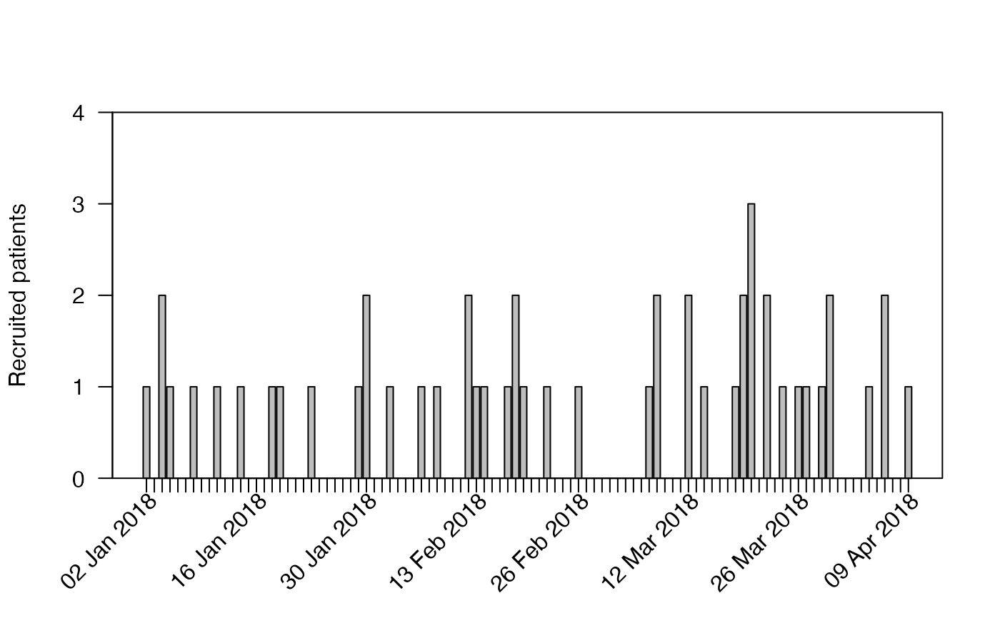
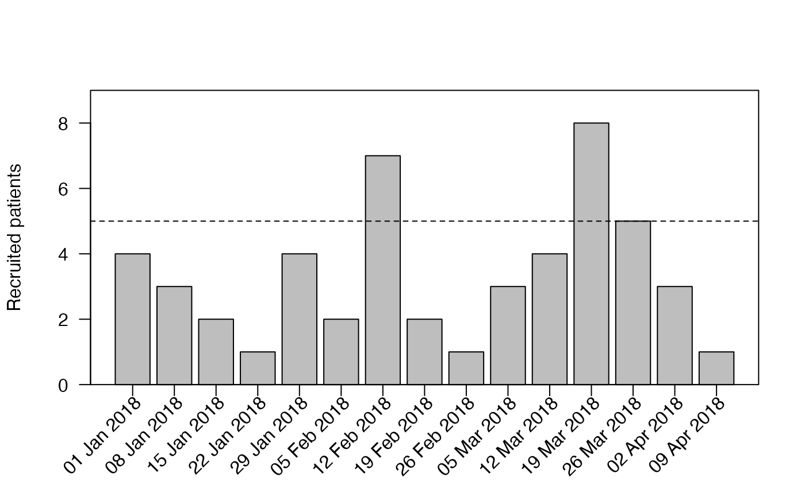

accrual_plot_abs
accrual_plot_abs.RdPlot of absolute recruitment by time unit
accrual_plot_abs( accrual_df, unit = "month", target = NA, start_date = NA, format_start_date = "%d%b%Y", current_date = NA, format_current_date = "%d%b%Y", ylim = NA, xlim = NA, ylab = "Recruited patients", xlabformat = "%b %Y", xlabsel = NA, xlabpos = NA, xlabsrt = 45, xlabadj = c(1, 1), xlabcex = 1, col = "grey", ... )
Arguments
| accrual_df | accrual data frame produced by accrual_create_df (optionally with by option as a list) |
|---|---|
| unit | time unit for which the bars should be plotted, any of "month","year","week","day", can be a vector with the same length as accrual_df |
| target | adds horizontal line for target recruitment per time unit, can be a vector with the same length as accrual_df |
| start_date | start_date: date when recruitment started, single character/date, or a vector with the same length as accrual_df, if not given the first enrollment date is used as start_date, |
| format_start_date | format of the start date, ignored if start_date is a date |
| current_date | date of the data export or database freeze, single character/date, or a vector with the same length as accrual_df, if not given the latest enrollment date is used for each site, |
| format_current_date | format of the current date, ignored if current_date is a date |
| ylim | limits for y-axis, can be a vector with the same length as accrual_df |
| xlim | limits for x-axis, in barplot units, can be a vector with the same length as accrual_df |
| ylab | y-axis label |
| xlabformat | format of date on x-axis |
| xlabsel | selection of x-labels if not all should be shown, by default all are shown up to 15 bars, with more an automated selection is done, either NA (default), NULL (show all), or a numeric vector |
| xlabpos | position of the x-label, can be a vector with the same length as accrual_df |
| xlabsrt | rotation of x-axis labels in degrees |
| xlabadj | adjustment of x-label, numeric vector with length 1 or 2 for different adjustment in x- and y-direction |
| xlabcex | size of x-axis label |
| col | colors of bars in barplot |
| ... | further arguments passed to barplot() and axis() |
Value
Barplot of absolute recruitment by time unit.
Examples
set.seed(2020) enrollment_dates <- as.Date("2018-01-01") + sort(sample(1:30, 50, replace=TRUE)) accrual_df<-accrual_create_df(enrollment_dates) accrual_plot_abs(accrual_df,unit="week",xlabformat="%d%b%Y")#time unit accrual_plot_abs(accrual_df,unit="day",xlabformat="%d%b%Y")#include target accrual_plot_abs(accrual_df,unit="week",xlabformat="%d%b%Y",target=10)#different start and current dates accrual_plot_abs(accrual_df,unit="week",xlabformat="%d%b%Y",target=10, start_date=as.Date("2017-12-01"),current_date=as.Date("2018-03-01"))#further plot options accrual_plot_abs(accrual_df,unit="week",ylab="No of recruited patients", xlabformat="%Y-%m-%d",xlabsrt=30,xlabpos=-0.8,xlabadj=c(1,0.5), col="pink",tck=-0.03,mgp=c(3,1.2,0))#accrual_df with by option set.seed(2020) centers<-sample(c("Site 1","Site 2","Site 3"),length(enrollment_dates),replace=TRUE) accrual_df<-accrual_create_df(enrollment_dates,by=centers) par(mfcol=c(2,2)) accrual_plot_abs(accrual_df=accrual_df,unit=c("week"))